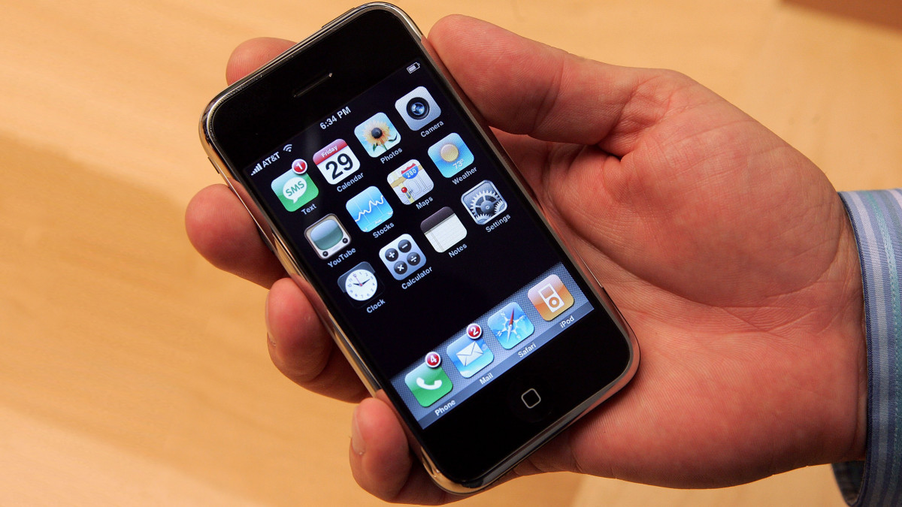
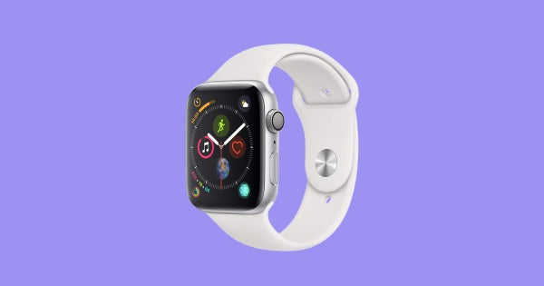

Face ID is a recent technological advancement that was created by Apple Inc. This new feature is used to be able to recognize the users face and let them do things such as unlock their phone, buy apps, and use Apple Pay. Touch ID was also made by Apple and is the face IDs predecessor. Face ID has also been used by other company such as Samsung, Google, and LG. Face ID did not come without controversy however. When it was released many people questioned how secure it was. Apple assured that it is more reliable and safe than touch ID however it has had some failure with distinguishing between identical twins. This seems to be the only slip-up and many other experiments have been done testing this new technology. Apple’s face ID is being used by millions today and seems to be enjoyed by most phone users around the world.
Reference Link
Touch ID is the predecessor of face ID. Touch id was also created by apple Inc. and has also been used by other phone companies. Touch ID is not used as much today by Apple because the phones that they are making now don’t have a home button that can read your fingerprint. Apple could be bringing it back with their next few phones because of technology that Samsung has created. This technology allows the phone to read your fingerprint even without a home button. Touch ID was very big when it came out because before touch ID we had to type in passwords manually. It was the first quick way that could unlock your phone and was reasonably secure. Many people still use it and it has made the feel of their phones much smoother and easier to use. It was one of the greatest advancement apple has ever made to their phones.
Reference Link
Samsung was the first company to release a camera on a mobile phone. This was a great accomplishment because, at the time, this was unheard of. A camera on a smartphone was seen as a thing of the future to people back then. We use our smartphone camera daily and it would not be possible without Samsung’s advancements. This milestone gave many other phone companies the ability to do this as well. IPhone has used along with LG and Google. The first camera did not have the best quality but it was the first one. Since then there have been great advancements in the quality of the camera and the things that the camera is able to capture. The camera on modern day phones can now do things like record in slow motion and take a panorama. This first phone camera was one of the greatest advancements that has ever been added to a phone and millions still use it.
Reference Link Many credit Apple for putting the first touch screen on a phone. This is not true however. The first touchscreen put on a phone was made by IBM Simon in 1992. This phone is referred to by the first smartphone by some. This invention allowed other companies to put it on their phones and this was a very big deal. The only touchscreens that were created back then were on things like ATMs. This invention made normal things on your phone better and easier to use. Since the screen took up the whole phone it was much easier to watch videos and read articles. It also made it a lot easier to type rather than trying to type on a tiny keyboard. It also made the possibilities of games you could play on your phone much vaster. All smartphones today have a touchscreen and phones would not be the same without them.
Reference Link The next milestone is the smartwatch. The smartwatch was invented by a man named Steve Mann in 1998. It was a Linux wristwatch. He presented it at IEEE ISSCC2000 in 2000. This watch was revolutionary because a watch like this had only been seen in movies such as Star Trek. Many people had dreamed of a watch like that being created. This advancement has led to big companies like Samsung and Apple to make their own. These smartwatches are very nice and can do many things. A few of the things that smartwatches can do it send emails, take calls, and track your heart rate. Watches like this have been made by fitness companies as well because these watches can track your steps. These watches also have the ability to be wirelessly charged which came relatively quickly after wireless charging was introduced to smartphones. These watches are very convenient and many people own one.
Reference Link